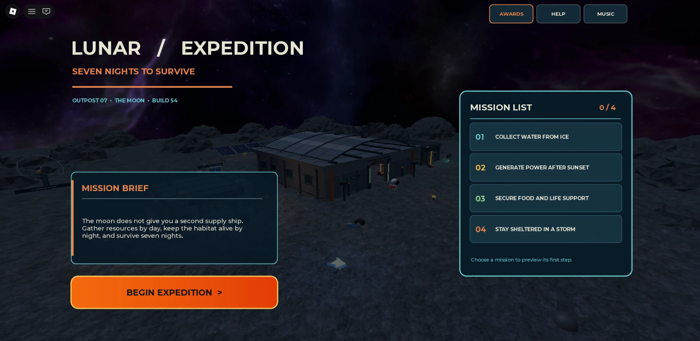
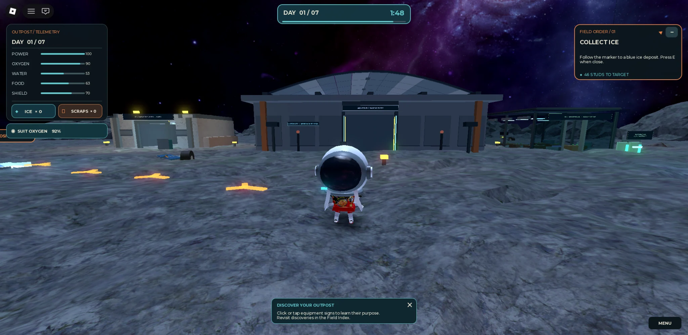
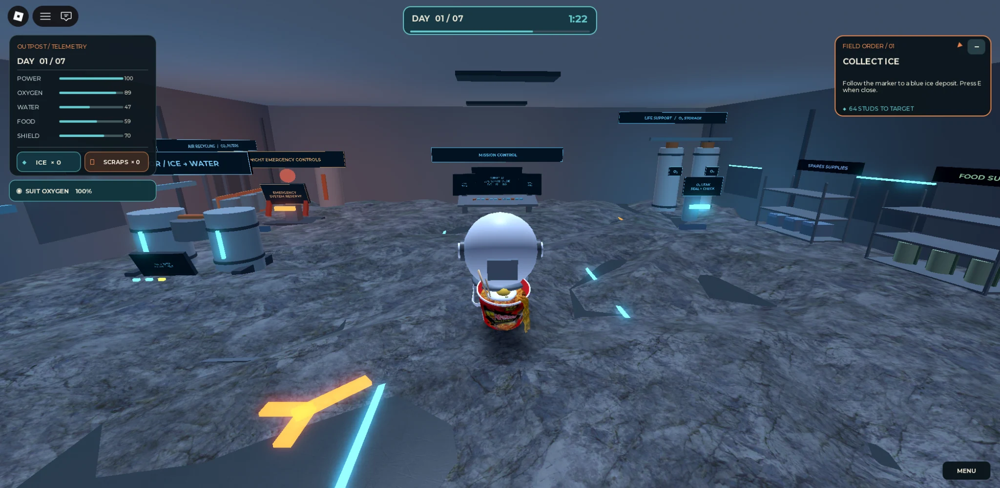
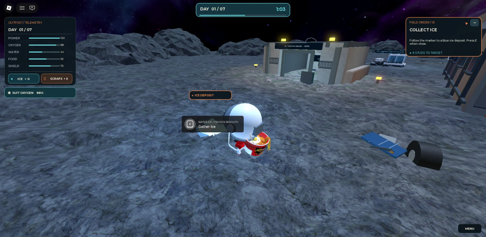
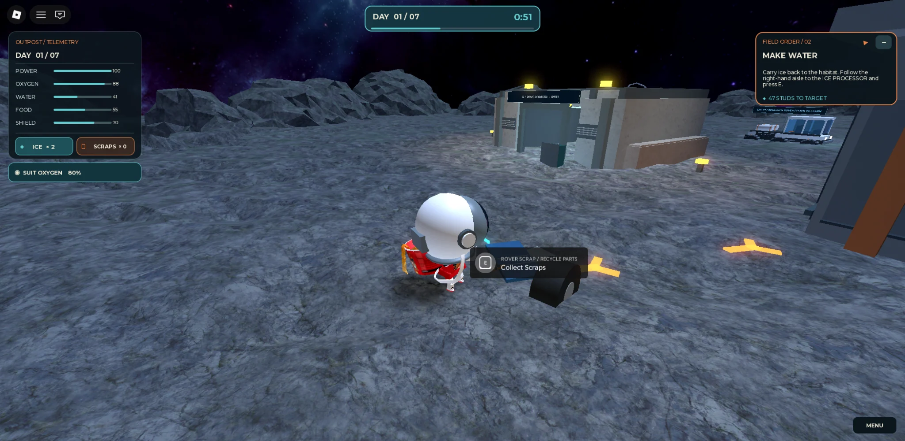
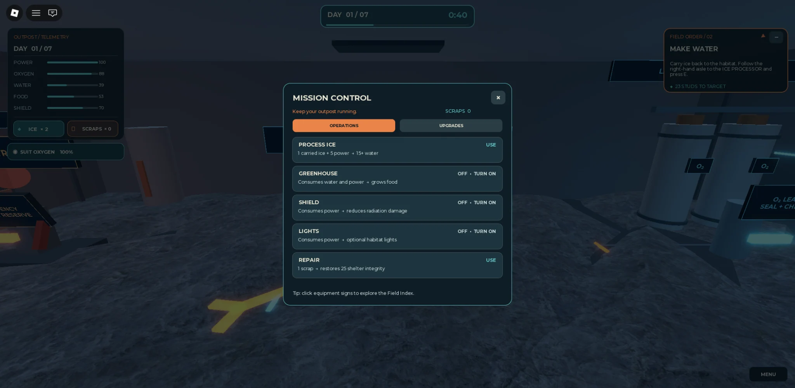
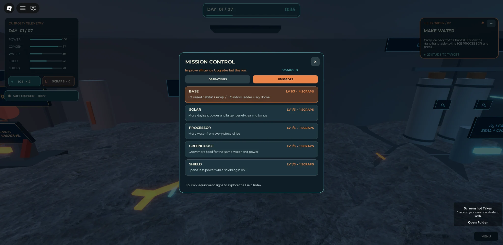
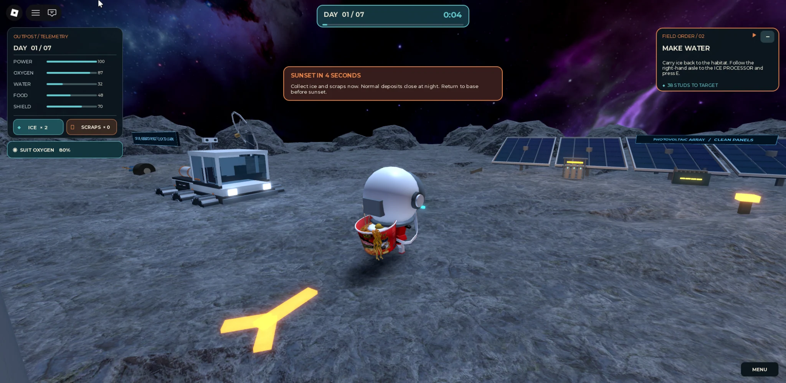
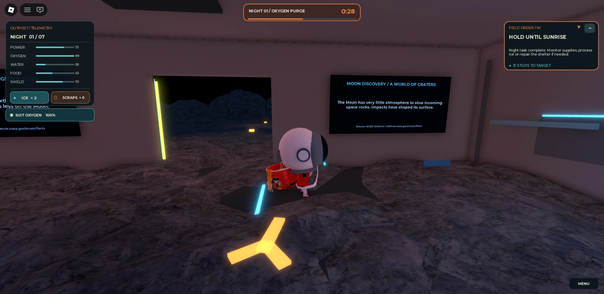
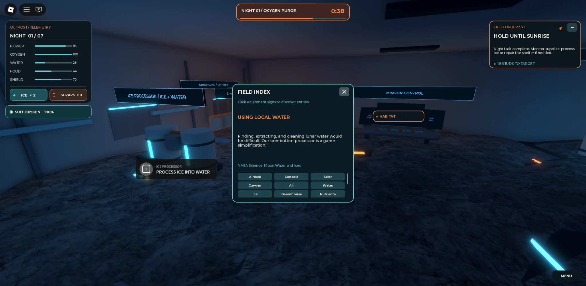

Core gameplay loop
Resource gathering, survival telemetry, Mission Control, base upgrades and learning interactions are implemented in the prototype.
08 / GAME DEVELOPMENT · NASA HACKATHON
Seven nights to survive.
An educational Roblox survival game for young teenagers. Players manage a lunar outpost, gather limited resources, upgrade their habitat and work to survive seven nights on the Moon.

View full image ↗Players take responsibility for Outpost 07 over a seven-night expedition. During daylight, they collect ice and scrap from the lunar surface. They turn ice into water, maintain essential systems and plan upgrades before the next night begins.
At night, the focus shifts to keeping the habitat operational through power failures, life-support issues and radiation hazards. The challenge is to manage limited supplies while learning how different lunar systems work together.
The experience combines third-person exploration with a telemetry dashboard showing the resources and systems needed to stay alive.

View full image ↗
View full image ↗Daytime exploration is about collecting the supplies needed for water production, shelter repairs and habitat upgrades.

View full image ↗
View full image ↗A central control interface lets players process ice into water, switch systems on or off, repair shelter integrity and improve equipment.

View full image ↗
View full image ↗Sunset warnings help players prepare before collection stops. Nighttime brings resource pressure and emergencies, making each earlier decision matter.

View full image ↗
View full image ↗Science is integrated into the world rather than separated into a lesson screen.
Clickable equipment signs, lunar fact posters and a Field Index explain topics such as lunar ice, air, energy and habitat equipment. A science quiz unlocks with the level-three observation dome.
The game also features a rover display, solar arrays and a final shuttle extraction objective, connecting the gameplay loop to the wider expedition theme.

View full image ↗Resource gathering, survival telemetry, Mission Control, base upgrades and learning interactions are implemented in the prototype.
Phone and tablet adaptations have been added to improve accessibility across devices.
Full seven-night balancing, mobile usability and the latest bug fixes still need thorough testing.
Project status: playable hackathon prototype, not a final polished release. Screenshots show the current in-game experience.
← Explore all projects